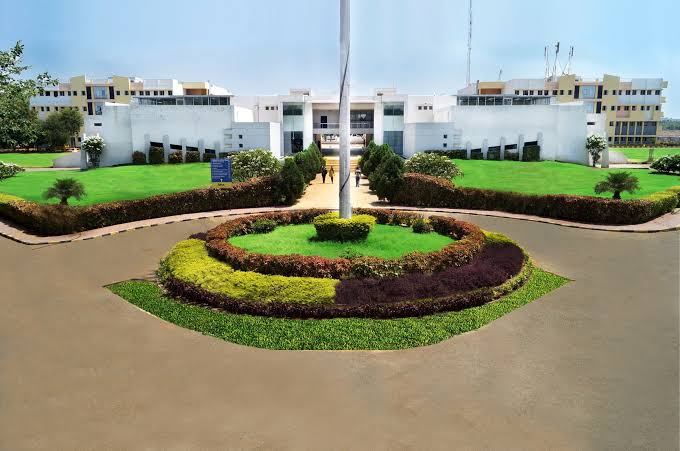
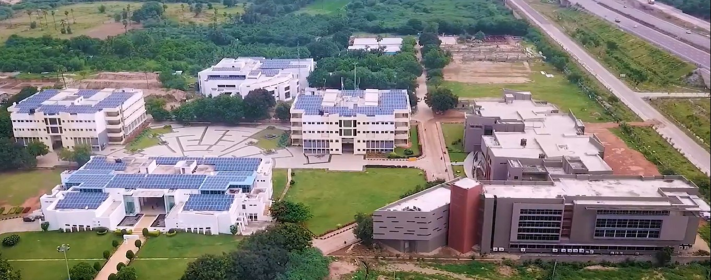
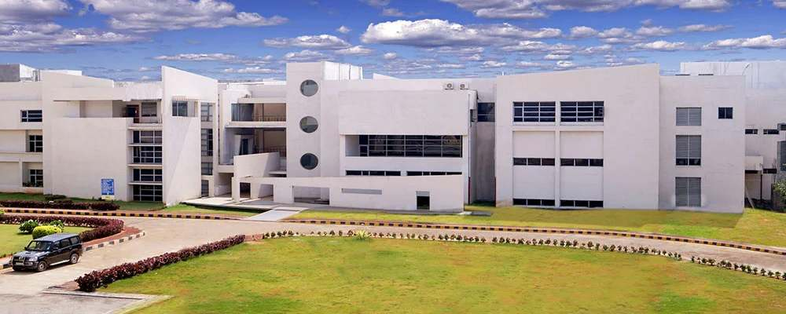
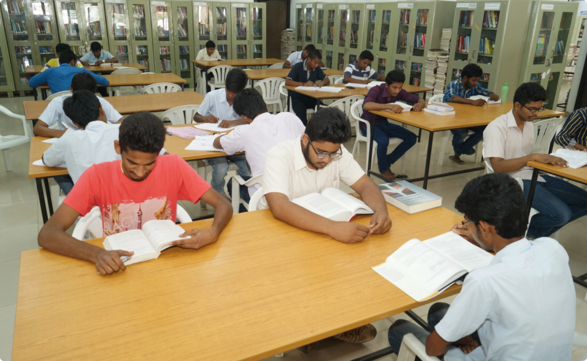
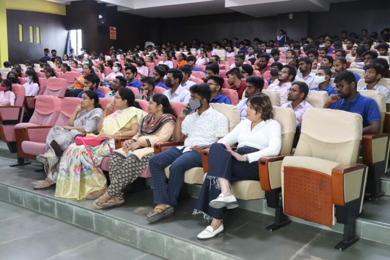
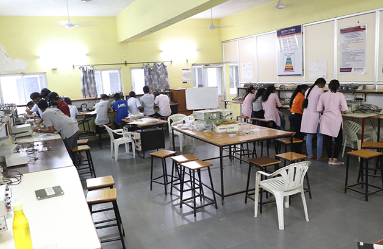

Institute of Science and Technology
Sreenidhi Institute of Science and Technology, Hyderabad was established in 1997 under the Sree Educational Group. The institution focuses on quality technical education, research, innovation and overall student development.
Sreenidhi Institute of Science and Technology–Hyderabad, sponsored by Sree Educational Group was established in the year 1997 by the Chairman, Dr. K.T. Mahhe, an extraordinary educationist, a pragmatic leader, and a dynamic entrepreneur with rich experience in Academics and Industry. He has a proven history of achievements, awards, and recognitions to his credit. He is an outstanding personality devoted to the cause of providing high-quality technical and scientific education to urban and rural students of Telangana, Andhra Pradesh, and all other states alike. A genuine commitment to the mission and dedicated leadership makes SNIST one of the finest and well-recognized higher educational institutions in India. Variety of facilities on the campus including, state-of-the-art labs with sophisticated equipment, libraries, Wi-Fi enabled campus, knowledge center, lavish AC auditoriums, smart classrooms, Hostels with premium facilities, amenities on campus including ATMs, bookstores, dining options, cafeterias, playground and many more give the students a truly fulfilling and enriching experience. Highly qualified faculty, flexible and dynamic curriculum, exciting research projects, and global connections are the features that set SNIST ahead of the rest. The students here are encouraged to participate in a wide range of academic, practical, co-curricular, extra-curricular programs to enable them to gain the required exposure to a wide variety of social, cultural, and intellectual opportunities and challenges. Such interesting learning experiences have transformed our students into multi-skilled and multi-tasking personalities, ensuring success in their lives and careers.
Sreenidhi Educational Group is involved in Engineering and Management Education, Publishing, and Marketing activities. Though the group is only two decades old, its success and growth are truly exceptional.
Sreenidhi Institute of Science and Technology strives to achieve academic excellence through a futuristic outlook in a well-disciplined environment by applying the following principles:
Commitment to continuous improvement in all areas.
Involvement of people with academic expertise and industrial knowledge at all levels.
Up-gradation of infrastructure and facilities from time to time.
Total Student Intake
Placement Performance
Experienced Faculty
To emerge as a leading center for technical education and research by producing professionally competent and socially responsible engineers.
1. To provide strong fundamentals in Engineering, Science and Technology.
2. To build industry and academic collaborations.
3. To develop teamwork, leadership and professional ethics.
4. To promote research, innovation and lifelong learning.
Smart Classrooms
Modern Laboratories
Best Faculty
Practical Learning
Sophisticated Equipment
Research Projects
Wi-Fi Enabled Campus
Sports Facilities
Central Library
AC Auditoriums
Premium Hostels
Cafeterias & Dining
A glimpse of SNIST campus life, infrastructure and learning environment.





